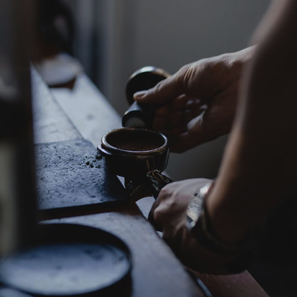

Welcome
Mountain Coffeehouse welcomes you to our shop in downtown Bend to enjoy a finely crafted cup of coffee. The coffeehouse menu features an assortment of beverages tailored by professional coffee artisans. Our talented baristas and bean roasters work tirelessly to make your visit at Mountain Coffeehouse special, and would be glad to answer any questions you have about the origins of our beans or our espresso process. Our community is what drives us to be the best, so we understand how important it is that we give back. Ask your barista about their volunteer commitment during your next visit.
Menu
Here you'll find our daily menu and their current prices. We also offer Mountain Coffeehouse beans in wholesale. Ask about our weekly or seasonal special drinks!
coffee2.50 |
espresso2.50 |
macchiato3.00 |
latte3.50 |
mocha3.75 |
chai3.00 |
cocoa2.50 |
tea1.75 |
| Vanilla/Hazelnut syrup - .50 Milk alternative - 1.00 |
|